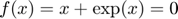
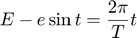

Metoda bisectiunii (injumatatirii intervalului)
BISECTION calculeaza o radacina a unei ecuatii scalare [x,y]=Bisection(f,a,b,tol) determina radacina a functiei scalare f in intervalul [a,b] cu precizia tol . y este valoarea functiei in
Contents
Codul pentru injumatatire
function [x,y]=Bisection(f,a,b,tol)
fa=f(a); v=1; if fa>0, v=-1; end if fa*f(b)>0 error('f(a) si f(b) nu au acelasi semn') end if (nargin<4), tol=0; end; x=(a+b)/2; while (b-a>tol) && ((a < x) && (x<b)) if v*f(x)>0, b=x; else a=x; end; x=(a+b)/2; end if nargout==2, y=f(x); end;
Test bisectiune
ecuatia

[x,y]=Bisection(@(x) x+exp(x),-1,0)
x =
-0.567143290409784
y =
-1.110223024625157e-16
Ecuatia lui Kepler

[E,f]=Bisection(@(E) E-0.8*sin(E)-2*pi/10,0,pi,1e-6)
E =
1.419135586110581
f =
-1.738227842773554e-07